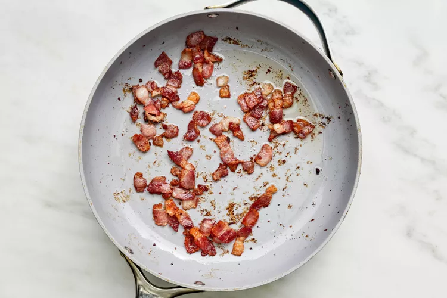
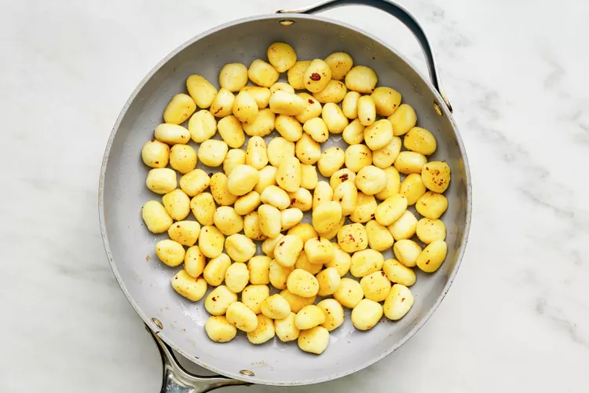
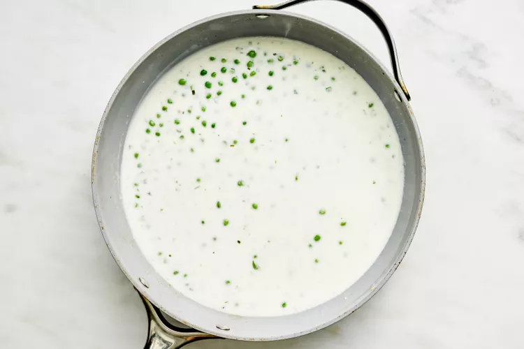

Indulge in the savory delight of Creamy Skillet Gnocchi with Bacon and Peas.
This one-pan wonder combines pillowy gnocchi with crispy bacon and vibrant peas, all bathed in a luscious creamy sauce.
The gnocchi are seared to perfection, creating a delightful golden exterior that complements the rich flavors of the dish.
Each bite is a harmonious blend of the smoky goodness of bacon, the sweetness of peas, and the decadence of the creamy sauce.
Quick and easy to prepare in a single skillet, this dish is a surefire way to elevate your comfort food game and delight your taste buds.
Heat a large nonstick skillet over medium. Add the bacon and cook, stirring occasionally, until browned and crisp, 6 to 7 minutes. Using a slotted spoon, transfer to a paper towel-lined plate. Keep 1-2 tablespoons of the drippings in the pan.
Increase the heat to medium-high. Add half of the gnocchi and cook, stirring occasionally, until browned, about 4 minutes. Transfer to a medium bowl. Repeat with remaining gnocchi.
Without wiping the skillet clean, add the water, cheese, mustard, and salt; stir to melt cheese and make a smooth sauce, about 2 minutes. Stir in the peas. Cook, stirring occasionally, until the peas are warmed through, about 1 minute.
Add the browned gnocchi and half (about 1/4 cup) of the bacon back to the skillet. Stir to coat with the sauce. Cook, stirring constantly, until the sauce has slightly thickened, about 1 minute.
Remove from heat and serve sprinkled with remaining 1/4 cup bacon and chives, if using. Serve immediately. Because of the stodgy nature of gnocchi, this recipe does not save well. Enjoy it while it lasts!